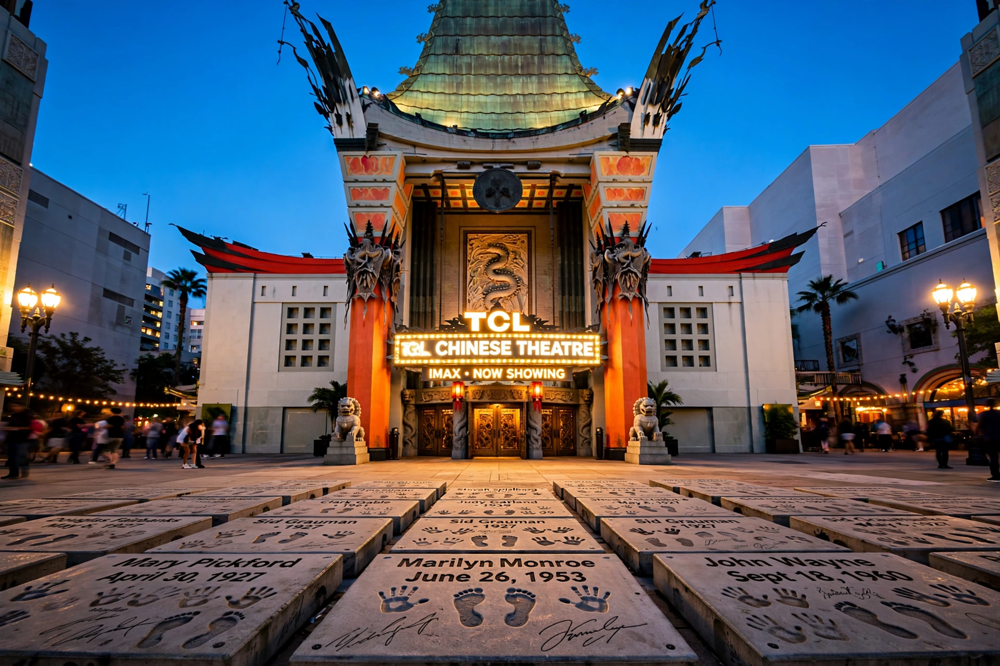

| Grauman's Chinese Theatre | |
|---|---|
| Current name | TCL Chinese Theatre (since 2013) |
| Address | 6925 Hollywood Boulevard, Hollywood, Los Angeles |
| Opened | 18 May 1927 |
| Owner | Chinese Theatres, LLC |
| Capacity | 932 (main IMAX auditorium) |
| Designation | Los Angeles Historic-Cultural Monument No. 55 |
Grauman's Chinese Theatre, known by its current naming-rights title as the TCL Chinese Theatre, is a movie palace on the historic Hollywood Walk of Fame at 6925 Hollywood Boulevard in Hollywood, Los Angeles, California. Opened in 1927 by showman Sid Grauman, it is the most famous of his theatres and the site of countless film premieres, including the 1977 launch of Star Wars.
Designed by Raymond M. Kennedy of Meyer & Holler, the building is an extravagant example of Exotic Revival architecture, evoking a giant Chinese pagoda with a green bronze roof, two Corinthian stone dragons' columns flanking the entrance (the originals imported from China), and a 90-foot (27 m) central tower. Heavenly Dog statues guard the forecourt.
The theatre's forecourt contains the handprints, footprints, and autographs of nearly 200 celebrities pressed into concrete — a tradition that, by legend, began accidentally when silent star Norma Talmadge stepped into wet cement in 1927. Mary Pickford and Douglas Fairbanks were the first to deliberately sign. Impressions have since included everything from Groucho Marx's cigar to the wands of the Harry Potter cast and the hoofprints of famous film horses.
The theatre was declared a Los Angeles Historic-Cultural Monument in 1968. Naming rights passed to Mann Theatres (1973–2001), returning the "Grauman's" name in 2001, and Chinese electronics firm TCL acquired the naming rights in 2013. That year the main auditorium was converted into one of the largest IMAX screens in the world.
Hollywood Walk of Fame · Dolby Theatre · Classical Hollywood cinema